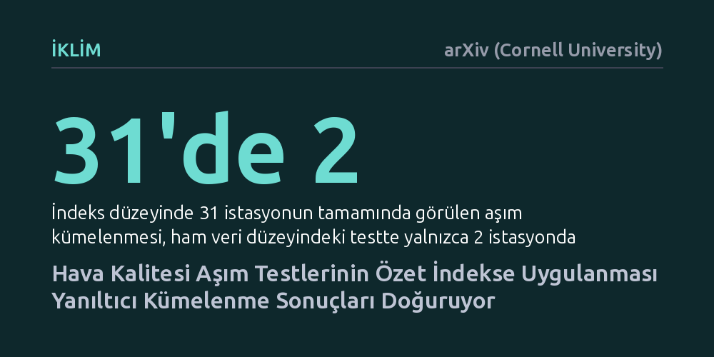

IKLIM · arXiv (Cornell University) · 2026-10-13
Hava kalitesi verilerinde kirlilik aşımlarının zamansal kümelenmesini test ederken, sıfır hipotezinin özet indeks yerine ham ölçümlere yerleştirilmesinin etkileri incelendi. Şili verilerinde indeks düzeyinde görülen yaygın kümelenmelerin, ham veri testinde neredeyse tamamen ortadan kalktığı ve olağan mevsimsel dalgalanmalarla açıklanabildiği saptandı.
Hava kirliliği raporlarındaki aşırı kirlilik günlerinin peş peşe kümelendiği yönündeki tespitlerin yeni bir kirlilik dinamiğinden değil, veriyi özetlerken yapılan istatistiksel test hatasından kaynaklanabileceğini gösterir.

Hava kirliliği ve çevre izleme çalışmalarında yaygın olarak başvurulan yöntemlerden biri, günlük ölçümleri alıp belirli bir yasal sınırın aşıldığı günleri sayarak haftalık veya aylık özet indekslere dönüştürmektir. Şehir yöneticileri ve araştırmacılar, bu özet verilere bakarak kirliliğin peş peşe gelen haftalarda tehlikeli biçimde kümelenip kümelenmediğini anlamaya çalışır. Ancak burada kritik bir istatistiksel yanılgı riski gizlidir: Veriyi özetledikten sonra yapılan kümelenme testleri, gerçekten yeni ve olağandışı bir kirlilik dinamiğini mi yakalamaktadır, yoksa sadece mevsimsel iniş çıkışların doğal bir yankısını mı yansıtmaktadır?
Zaman serisi analizlerinde olağandışı bir düzenin varlığını sınamak için genellikle bir sıfır hipotezi kullanılır; yani verinin temel özellikleri korunarak yapay olarak rastgeleleştirilmiş vekayi seriler üretilir ve gerçek veri bunlarla kıyaslanır. Geleneksel uygulamada araştırmacılar bu sıfır hipotezini doğrudan oluşturdukları özet aşım indeksine uygular. Bu çalışma tam da bu noktada durarak temel soruyu soruyor: Sıfır hipotezi özetlenen indekse mi konulmalı, yoksa ölçümün yapıldığı ham veri serisine mi yerleştirilmelidir?
Bu sorunun yanıtı yalnızca kuramsal bir tartışma değildir; doğrudan halk sağlığı kararlarını ve kirlilikle mücadele politikalarını etkiler. Eğer yapılan istatistiksel test yanlış yerde konumlandırılırsa, olağan bir mevsimsel hava olayı kirlilik kaynaklarının kontrolden çıktığı şeklinde yorumlanabilir ve kamu kaynakları yanlış müdahalelere yönlendirilebilir.
Araştırmacı, hipotez yerleşiminin sonuçları nasıl etkilediğini somut bir ortamda test etmek için Şili genelinde yer alan 31 hava kalitesi izleme istasyonunun 2018 ile 2025 yılları arasındaki günlük PM2.5 ince partikül ölçümlerini inceledi. Analizde, Şili'nin ulusal 24 saatlik standardı olan metreküp başına 50 mikrogramlık sınırın aşıldığı günlerin haftalık kümelenme desenleri değerlendirildi.
Çalışmada iki temel test yaklaşımı karşılaştırıldı. İlk yaklaşımda, doğrudan haftalık aşım sayılarına genlik ayarlı Fourier dönüşümü uygulanarak indeks düzeyinde bir sıfır hipotezi kuruldu. İkinci yaklaşımda ise sıfır hipotezi doğrudan günlük ham ölçüm serilerine uygulandı; yani ham veriler rastgeleleştirildikten sonra aynı eşik filtreleme ve haftalık toplama aşamalarından geçirilerek indekse taşındı. Ayrıca mevsimsel kenar dağılımlarını ve kısa süreli günlük bağımlılığı hesaba katan üretken bir Gauss kopula modeli de karşılaştırmaya dahil edildi.
Çalışma yalnızca ulusal standartla sınırlı kalmadı. Dünya Sağlık Örgütü'nün 15 mikrogramlık kılavuz değerinden Şili'nin 80 mikrogramlık acil uyarı düzeyine kadar uzanan geniş bir eşik aralığı taranarak farklı kirlilik seviyelerinde test davranışları modellendi.
Elde edilen bulgular, testin nerede yapıldığının sonucu bütünüyle değiştirdiğini ortaya koydu. Sıfır hipotezi doğrudan türetilmiş haftalık indekse uygulandığında, incelenen 31 istasyonun tamamında haftalık kirlilik aşımlarının istatistiksel olarak anlamlı biçimde kümelendiği sonucuna varıldı. Klasik bir yaklaşımla bu sonuç, Şili'nin tüm bölgelerinde kirliliğin ardışık haftalarda kalıcı bir tehlike oluşturduğu şeklinde yorumlanabilirdi.
Ancak sıfır hipotezi ham günlük ölçümlere yerleştirilip oradan indekse taşındığında tablo kökten değişti: 31 istasyondan sadece 2 tanesinde haftalık aşım kümelenmesi istatistiksel anlamlılığını koruyabildi. Mevsimsellik ve kısa süreli hafızayı dikkate alan üretken model de bu bulguyu teyit ederek 31 istasyonun 30'unda ham vekayi yaklaşımıyla tam uyum gösterdi.
Dahası, farklı eşik değerleri incelendiğinde, aylık olay olasılıkları mevsimsel olarak yoğunlaştıkça yalnızca indeks düzeyinde reddedilen istasyon sayısının 8'den 31'e fırladığı görüldü. Mevsimsel olasılıklar eşitlendiğinde ise bu yapay ret kararları 29 istasyondan 5'e geriledi. Yani kümelenme gibi görünen durumun büyük bölümü, kış aylarındaki kirlilik olasılığının yaza göre daha yüksek olmasından ibaretti.
Araştırma bu durumu matematiksel olarak kayıplı gözlem haritası kavramıyla açıklıyor. Sürekli ve ham ölçümleri 'aşıldı veya aşılmadı' gibi ikili sayımlara dönüştürmek kaçınılmaz bir bilgi kaybı yaratır. Yazarın geliştirdiği lif içi (within-fiber) tanılama yöntemi, ham veri genlikleri bozulduğunda sıfır dağılımının Monte Carlo değişkenliğinin medyan olarak 18 katı kadar kaydığını gösterdi. Bu durum, özet indeks düzeyinde yapılan rastgeleleştirmenin ham verideki gerçek dinamikleri temsil edemediğini kanıtlıyor.
Bu bulguların çevre yönetimi açısından anlamı oldukça açıktır: Şili'deki haftalık PM2.5 aşımları, sanılanın aksine olağandışı kirlilik dalgalarından değil, kış mevsiminin getirdiği olağan koşullar ile birkaç günlük kısa vadeli hava şartlarından kaynaklanmaktadır. Dolayısıyla haftalık indekslerde görülen kümelenmeler, günlük kirlilik dinamiklerine dair bir kanıt olarak okunmamalıdır.
Sonuç olarak, çevre ve iklim alanında politika üreten uzmanların özet indeksler üzerinden vardığı kümelenme hükümlerine temkinle yaklaşması gerekmektedir. İstatistiksel sınamalar ham veri katmanında kurgulanmadığı sürece, mevsimsel doğa olaylarının yeni bir kriz gibi algılanması riski her zaman devam edecektir.